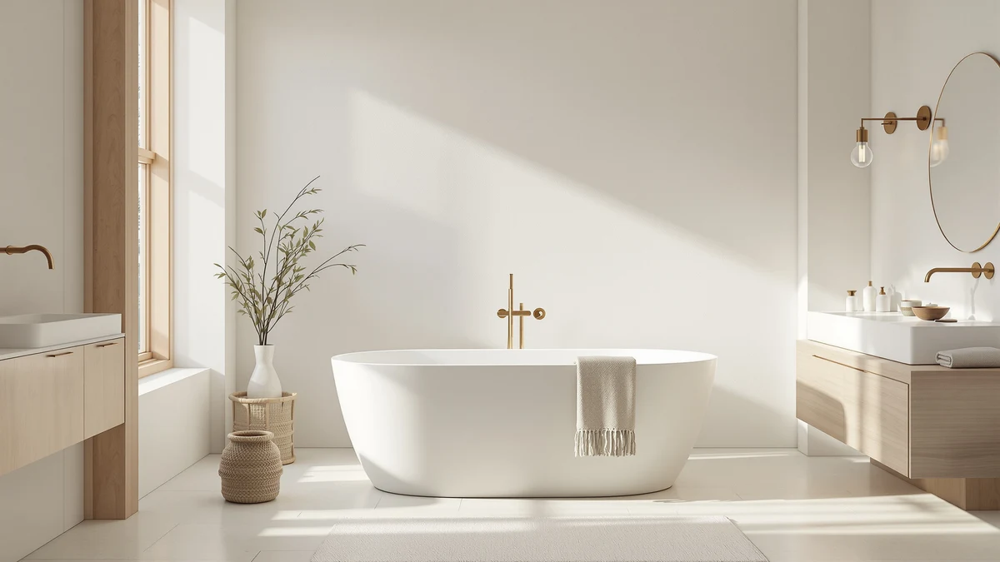

Best Acrylic vs Cast Iron Bathtubs (2026) | Best Freestanding Bathtubs


Things to Know Before You Buy
- Weight is the deciding factor for most people. An acrylic tub is 60-120 lbs and two people can carry it upstairs. A cast iron tub is 300-500 lbs empty, and full with a bather it approaches half a ton, which can mean reinforcing the floor.
- Cast iron holds heat far longer. The iron itself warms up and acts like a radiator, keeping bathwater hot for a long soak. Acrylic warms to the touch quickly but the water cools faster.
- Price is not close. Quality acrylic freestanding tubs run roughly $400-$900. Cast iron clawfoots typically start around $2,000 and climb from there before you add the faucet.
- The faucet is sold separately for both. Freestanding tubs of either material need a floor-mount or freestanding filler you buy on top of the tub price.
- Durability differs by failure mode. Cast iron enamel resists scratches and chips for decades. Acrylic can dull, scratch, or craze over years, though it is also lighter to replace when it does.
Almost every freestanding tub you can buy is one of two things under the finish: a molded sheet of acrylic, or a slab of enameled cast iron. They can look nearly identical in a showroom photo, but they behave like completely different products the moment you try to move one, heat the water, or read the price tag. Choosing between them is really the first decision in any freestanding tub purchase, and it shapes everything that follows, from whether you can install it yourself to whether your floor needs reinforcing.
This is not a hit piece on either material. Both make excellent tubs, and the right answer genuinely depends on your bathroom, your budget, and how you like to bathe. Below we lay out what each material actually is, then go head-to-head on build quality, price, and the day-to-day bathing experience, and finish with clear guidance on who should pick which. We also flag three specific tubs worth buying: the acrylic champion for most people, and two cast iron flagships for the devotees.
Quick Answer
For most people, acrylic wins. It is lighter, warmer to first touch, far cheaper, and easy enough to install without a crew, which is why the WOODBRIDGE 59" Acrylic ($719) is our overall pick. Choose cast iron only if you specifically want the longest heat retention and a finish that lasts decades, you have a period bathroom that suits a clawfoot, and your floor and budget can handle a 300-500 lb tub that costs $2,000-plus. If that describes you, the Signature Hardware Lena 72" is the one to get.
What is Acrylic?
Acrylic is a molded plastic sheet, usually reinforced underneath with fiberglass and resin, formed into a tub shape and finished with a smooth, glossy surface. The better freestanding designs use a double-wall construction, meaning there is an inner and outer shell with an air gap between them, which stiffens the tub and helps slow how fast the water cools. It is the material behind the overwhelming majority of freestanding tubs sold today, and for good reason.
The headline advantage is weight. A typical acrylic freestanding tub weighs 60 to 120 pounds empty, so two people can carry it up a flight of stairs and set it in place without special equipment. That single fact makes acrylic the DIY-friendly choice: you can position it, connect a floor-mount filler and drain, and be soaking the same weekend. Acrylic also feels warm the instant you touch it, never the cold shock of a metal tub, and it comes in the widest range of modern shapes and sizes at prices that start around $400.
Acrylic is the right material for the vast majority of buyers: anyone on a normal renovation budget, anyone installing on an upper floor or over a subfloor they would rather not reinforce, and anyone who wants a contemporary silhouette. Its honest weaknesses are that the surface can scratch, dull, or develop fine crazing over many years of use, and that while double-wall designs hold heat decently, the water still cools noticeably faster than it does in iron.
What is Cast Iron Bathtubs?
Cast iron tubs are exactly what the name says: molten iron cast into a thick tub shape, then coated with a fused layer of porcelain enamel that gives the glossy white bathing surface. This is the traditional material behind the classic clawfoot silhouette, and it has been made essentially the same way for well over a century. When you see a genuinely heirloom-grade freestanding tub, it is almost always enameled cast iron.
The defining strength is heat retention. All that iron takes a while to warm up, but once it does it behaves like a radiator, giving the heat back to the water and keeping a bath hot far longer than any acrylic tub can. The enamel finish is the other big win: it is genuinely scratch-resistant and, cared for reasonably, lasts for decades without dulling or crazing. A well-kept cast iron tub can outlive the bathroom around it.
The catch is weight and cost, and both are serious. An empty cast iron tub runs 300 to 500 pounds, and once you add water and a bather it approaches half a ton, which is enough that many upper-floor installations need the joists checked or reinforced. You will not be carrying it in with a friend; plan on professional help to move and set it. Prices generally start around $2,000 and go up. Cast iron is for the buyer who wants the longest, hottest soak, a finish that lasts a lifetime, and a period look, and who has the floor, the budget, and the patience to install it properly.
Head-to-Head: Build Quality & Durability
On raw durability, cast iron wins, but the two materials fail in different ways. Cast iron enamel is hard, scratch-resistant, and chip-resistant under normal use, and it holds its gloss for decades. The rare failure is a chip from a dropped heavy object, which exposes the iron and can rust if not repaired, but short of abuse the finish simply endures. This is the material you buy if you want a tub that outlasts the rest of the room.
Acrylic is less bulletproof but far from fragile. Over years of use its surface can pick up fine scratches, lose a little gloss, or develop hairline crazing, especially if cleaned with abrasive pads. The upside is that acrylic is repairable with polishing kits, it does not rust, and because it is so much lighter, replacing a worn acrylic tub a decade or two down the line is a far smaller job than wrestling out 400 pounds of iron. For build quality the honest verdict is that cast iron lasts longer, but a well-made double-wall acrylic tub is plenty durable for most households.
Head-to-Head: Price & Value
This is the least close category. A quality acrylic freestanding tub like our WOODBRIDGE pick sells for $719, and good acrylic soakers start as low as around $400. A comparable enameled cast iron clawfoot starts around $2,000 and climbs; the Signature Hardware Lena 72" is $2,599 and the more compact Callaway 61" is $2,311. That is a three-to-four-times price gap for the tub alone, before you add the floor-mount filler that neither material includes.
Cast iron also carries hidden costs acrylic does not. The weight can require floor reinforcement, and it almost always requires paid help to deliver and set, where an acrylic tub is a two-person, do-it-yourself job. If value means the most soaking tub for your money, acrylic wins comfortably. Cast iron is not trying to win on price; you pay the premium for heat retention, longevity, and a look money-conscious acrylic cannot fully replicate.
Head-to-Head: Use Experience
In the tub, the difference you feel first is temperature. Acrylic is warm to the touch the moment you climb in, so there is no cold shock against your back, and a double-wall design holds a comfortable bath for a normal soak. Cast iron feels cool at first because the metal has to warm up, but once it does it keeps the water hot dramatically longer, which is the whole appeal for people who like to linger for 45 minutes without topping up the hot tap. If your ideal bath is long and you hate reheating it, cast iron delivers an experience acrylic cannot match.
Everything around the soak, though, favors acrylic. It is lighter to maneuver during install, easier to fit on an upper floor, and available in more modern shapes. Cast iron rewards you with that radiator-warm soak and a timeless clawfoot presence, but you pay for it in delivery logistics, floor loading, and the reality that once it is placed, it is never moving again. Both are pleasant to bathe in; the question is whether the longer heat retention is worth the weight and cost it comes bundled with.
When to Choose Acrylic
Choose acrylic if you are like most buyers. It is the right call when your budget is in the normal $400-$900 range, when you are installing on an upper floor or simply do not want to reinforce a subfloor, and when you would rather set the tub yourself over a weekend than schedule a delivery crew. It is also the better fit for contemporary bathrooms, since acrylic comes in the widest range of modern shapes and sizes. If you want a genuinely deep, comfortable soak at a sane price with a warm-to-the-touch surface, acrylic is the material, and the WOODBRIDGE 59" is where we would start.
When to Choose Cast Iron Bathtubs
Choose cast iron if you are a heat-retention devotee or you are restoring a period home. It makes sense when your favorite bath is a long one and you want the water to stay hot without reheating, when you want a finish that will still look new in twenty years, and when a clawfoot silhouette is the whole point of the room. Just make sure the practicalities line up first: confirm your floor can carry 300-500 pounds plus water and bather, budget $2,000-plus for the tub alone on top of the faucet, and plan for professional delivery and installation. If those boxes are checked, the Signature Hardware Lena 72" is the flagship worth the money.
Our Top Picks
Whichever side of this comparison you land on, these are the three tubs we would actually buy: one acrylic champion for most people, and two enameled cast iron flagships for the heat-and-longevity crowd.

Editor’s Pick
WOODBRIDGE 59" Acrylic Freestanding Bathtub
The acrylic tub to buy for most bathrooms: a deep double-wall soak, light enough to install yourself, at a price cast iron cannot touch.
$719.00
Check Price on Amazon
Best Value
Signature Hardware 312541 Lena 72"
The cast iron flagship, a full 72 inches of enameled clawfoot that holds heat for the longest soaks, if your floor and budget can handle it.
$2,599.00
Check Price on Amazon
Premium Choice
Signature Hardware 475639 Callaway 61"
A more compact 61-inch cast iron clawfoot with the same decades-lasting enamel, for period bathrooms tighter on space than a 72" allows.
$2,311.24
Check Price on AmazonFrequently Asked Questions
Which holds heat better, acrylic or cast iron?
Cast iron, and it is not close. The iron warms up and then acts like a radiator, giving heat back to the water and keeping a bath hot far longer. Acrylic feels warmer the instant you touch it, and a double-wall design holds heat decently, but the water still cools noticeably faster than in an iron tub.
Do I need to reinforce my floor for a cast iron tub?
Possibly. A cast iron tub weighs 300-500 pounds empty, and full with a bather it can approach half a ton concentrated in a small footprint. On a ground floor over a slab you are usually fine, but for an upper floor it is worth having the joists checked and reinforced if needed. Acrylic tubs at 60-120 pounds almost never raise this concern.
Is acrylic or cast iron cheaper?
Acrylic, by a wide margin. Good acrylic freestanding tubs run roughly $400-$900, while enameled cast iron clawfoots typically start around $2,000 and go up. Cast iron also adds hidden costs like professional delivery and possible floor reinforcement. Neither material includes the faucet, which you buy separately.
Can I install a freestanding tub myself?
An acrylic tub, yes, in most cases. At 60-120 pounds it is a two-person carry, and connecting a floor-mount filler and drain is a manageable weekend job. Cast iron is a different story: its weight means you will want professional help just to move and set it safely.
Which lasts longer?
Cast iron has the edge on longevity. Its porcelain enamel is scratch- and chip-resistant and holds its gloss for decades. Acrylic can scratch, dull, or craze over many years, though it is repairable with polishing kits and, being light, far easier to replace when the time comes. For most households a quality double-wall acrylic tub is still plenty durable.
Final Verdict
For most people, buy acrylic. It gives you a deep, warm, comfortable soak at a fraction of the price, installs without a crew, and fits the floors and budgets real renovations actually have. The WOODBRIDGE 59" Acrylic at $719 is where we would put our money, and nothing about it feels like a compromise for the price. Cast iron is not the wrong answer, but it is the specialist answer: choose it only if the longest possible heat retention, a lifetime enamel finish, and a period clawfoot look genuinely matter to you, and only once you have confirmed the floor can take the weight and the budget can take the $2,000-plus. If that is you, the Signature Hardware Lena 72" is the flagship worth every pound of it. Whichever you choose, remember the faucet is sold separately, and measure your room and doorway before you order.